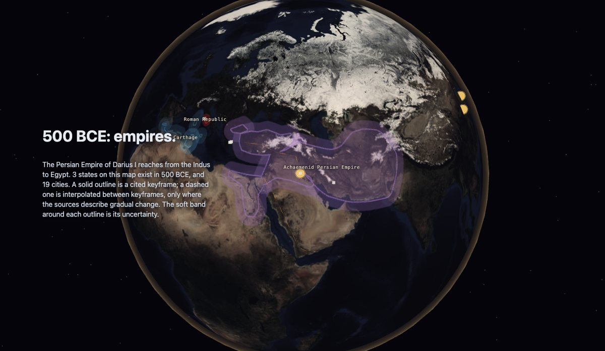
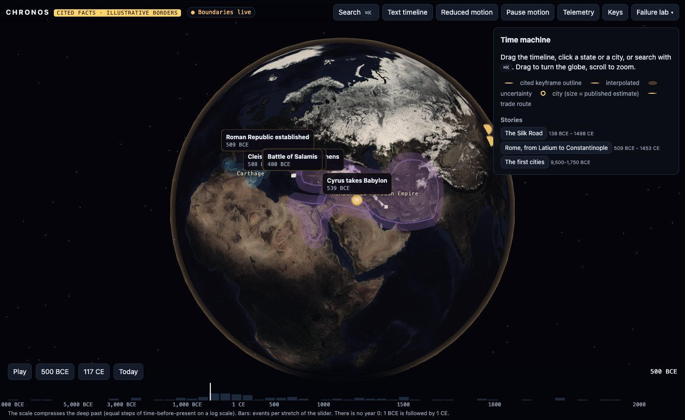
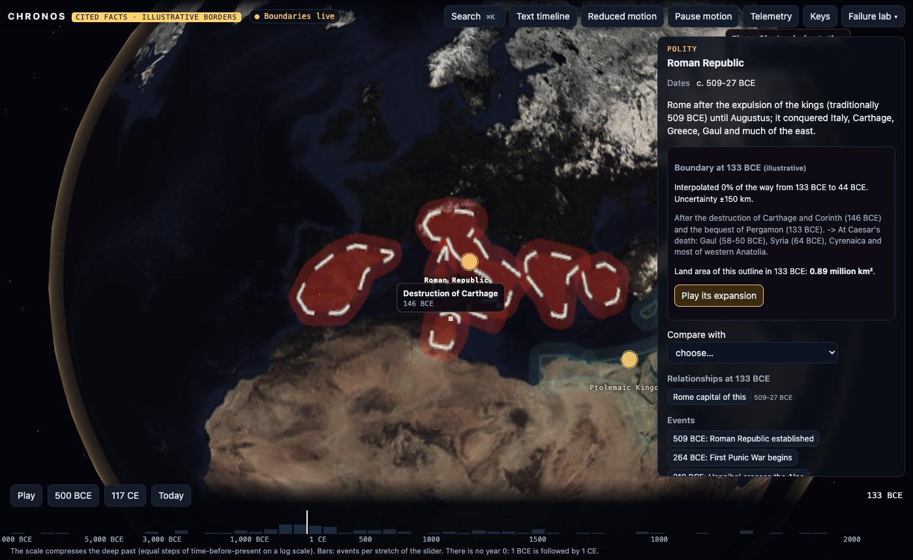
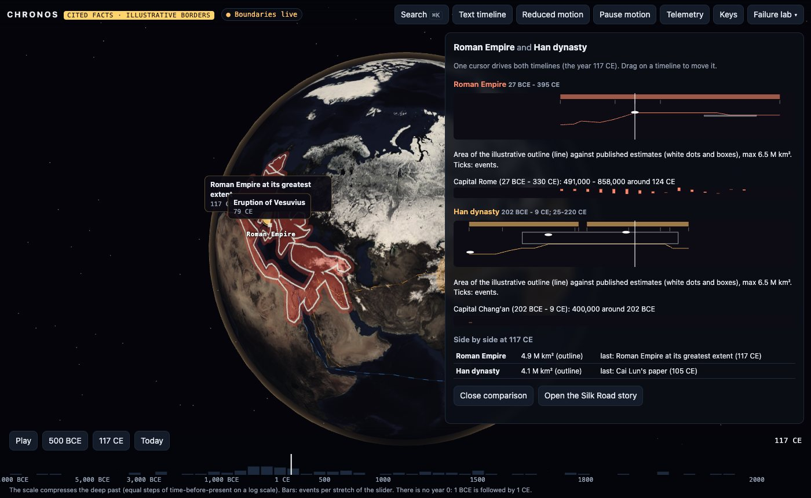
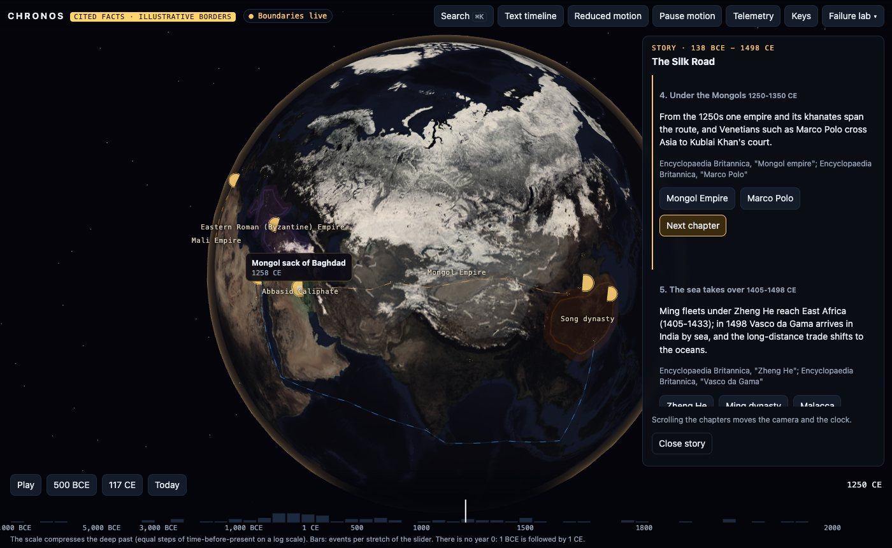
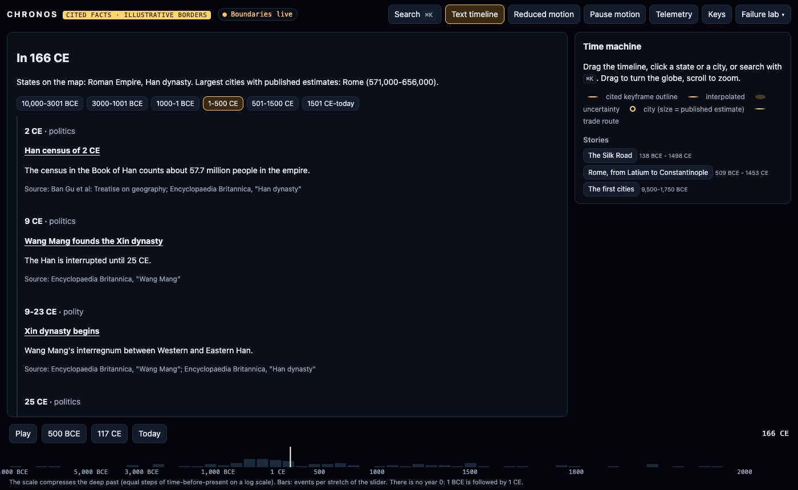

TypeScript · three.js · historical GIS · 2026-10
Can a Map of History Show What It Doesn't Know?
A time machine for 12,000 years on one continuous timeline: 507 citations behind every date, place and event, city sizes from the published estimates of Morris, Modelski and Chandler (201 figures), and borders that are openly illustrative, morphed only where the sources describe gradual change, drawn with their uncertainty, and measured against published areas (24 of 27 within ±50%; Rome at 117 CE 4.9 against 5.0 million km², Han 4.1 against 6.5).

Built from blueprint 08 of a written build book (Volume V, motion-first products) as one vertical slice. The facts are real and cited (Encyclopaedia Britannica entries, the Oxford History of Ancient Egypt, the Book of Han, the Book of the Later Han, Cline 2014, SlaveVoyages), and city sizes are the published estimates of Morris (2010), Modelski (2003) and Chandler (1987) as tabulated on Wikipedia (CC BY-SA 4.0). The boundaries are illustrative outlines drawn for this project, not a historical map, and are labelled so wherever they appear. Not built: real historical GIS boundaries, MapLibre or Cesium, a graph database or search index, the nine-service split, Kafka, Redis, Terraform and cloud deployment, single sign-on and billing.
01 — The problem
History is usually stored by article, not by time, place and relationship. Put it on a map and three honesty problems appear at once. Dates cross the BCE/CE boundary, where there is no year 0. Population figures exist only for some cities in some centuries. Borders for most of the past are reconstructions, and a smooth animation between two of them can invent an empire that never looked like that. Can a map of history move continuously through 12,000 years and still show, at every moment, what is known, what is estimated and what is drawn?
The build book's rule for this volume is that the public website is the product, with motion carrying time and causality. Blueprint 8 of ten, built as its demo scenario end to end.
02 — What I built
A Next.js site that runs entirely in the browser, plus a Fastify API on PostGIS behind the same interface, started by one docker compose up.
- A curated dataset: 30 states, 80 boundary keyframes, 63 cities, 90 events, 52 relationships with validity windows, 7 trade routes and 3 stories. Every fact cites a source, and a builder refuses to write the data if one doesn't, or if year 0 or a temporal paradox appears.
- Published city estimates: 264 records parsed from the compiled Morris, Modelski and Chandler tables.
- A globe that paints every state as a union into a canvas texture: solid outlines for cited keyframes, dashed for interpolated ones, a band as wide as the uncertainty. Cities are sized by their estimates, routes flow in their documented phases, and event cards rise from their places.
- Time machine tools: a log-scale scrubber, a camera journey through each state's expansion, two synchronised timelines for comparison, scroll-driven stories, a text timeline and search that knows what a name meant in a given year.
03 — How it was built
- 01
Years that cannot be zero
All data uses historical numbering (-500 is 500 BCE) and arithmetic goes through astronomical years, so the time from Caesar's death in 44 BCE to Augustus's in 14 CE comes out as 57 years, not 58. The database has
CHECK (year <> 0)on every year column, the API answers year 0 withno_year_zero, and a 2,001-point property test checks that the scrubber never lands on it.export const toAstro = (y: HYear) => (assertYear(y) < 0 ? y + 1 : y); // 1 BCE -> 0 export const yearsBetween = (a: HYear, b: HYear) => toAstro(b) - toAstro(a); - 02
Facts with their sources
507 citations cover every entity, event, relationship, route, story chapter and boundary keyframe. The builder fails if one is missing, if a Britannica citation does not name its entry, if a relationship falls outside either party's lifespan, or if a successor starts before its predecessor. Han's two windows (202 BCE-9 CE and 25-220 CE, around Wang Mang's Xin dynasty) are part of the data, so the map shows Xin, not Han, in 15 CE.
- 03
City sizes, and silence where there are none
The compiled tables list a city only while it was among the largest. Each figure keeps its source, and where sources disagree the marker shows the range (Rome in 1 CE: 800,000 by Modelski to 1,000,000 by Morris). Between figures no more than 700 years apart the size is interpolated on a log scale. Outside that the marker is hollow: no number is invented.
- 04
Borders that say how they were made
Each keyframe's outline is labelled illustrative and says whether the next change was gradual. Rome's conquest of Italy (509-264 BCE) morphs; its later conquests are steps. Each polity's parts are painted as one union, with the strokes cut out where they fall inside the fill, so overlapping outlines show no internal edges. Measured on a land mask against published peak areas, 14 of 27 outlines are within ±25% and 24 within ±50%. They lean small: the median ratio is 0.77, and the Mongol outline is 13.4 against 24.0 million km².
k.globalCompositeOperation = "destination-out"; // cut strokes inside the union for (const p of parts) { path(k, p); k.fill(); } - 05
Which Han, which Alexandria?
Names repeat across eras. Search ranks candidates by name or era-specific alias, by whether the entity existed at the current date, by distance and by type. 'Han' in 300 BCE is the Warring State; in 100 CE it is the dynasty. 'Alexandria' near the Syr Darya in 320 BCE is Alexandria Eschate. Byzantium, Constantinople and Istanbul are one city with three names in their own centuries.
- 06
Two empires on one cursor
Comparison mode draws Rome and Han as two lanes driven by one cursor: their periods, events, the area of the outline against published estimates, and their capitals' population. The 166 CE embassy from 'Daqin' recorded in the Book of the Later Han is the single known contact. A trade-route story then follows the Silk Road over five chapters whose scroll position drives the camera and the clock.
- 07
The same product behind an API
The Docker stack serves the same site against Fastify and PostGIS. Boundary queries filter by year and bounding box with a GIST index, and relationships can be asked for the year they are valid. Museums' curator notes are private to each institution under row-level security, need an idempotency key, and go into a hash-chained audit log. One failure is built in and recovers: when the boundary service goes down, cities, events and text keep working, outlines for unloaded eras are missing, and the client retries.
04 — Results
The demo. 500 BCE, reached by dragging the timeline: Persia from the Indus to Egypt, Carthage and the Roman Republic in the west:

The Roman Republic in 133 BCE, its outline labelled illustrative, its uncertainty and basis stated:

Rome and Han on synchronised timelines:

| Outline vs published | Ours | Published |
|---|---|---|
| Roman Empire, 117 | 4.9 | 5.0 |
| Han, 100 CE | 4.1 | 6.5 |
| Achaemenid, 500 BCE | 5.2 | 5.5 |
| Mongol, 1270 | 13.4 | 24.0 |
The Silk Road story under the Mongols, and the text timeline that carries every fact without motion:


Checks. Every fact cited and the builder refuses data that is not; no year 0 anywhere; 35 unit and API tests (domain coverage 96.9% of statements); 11 browser journeys, including the full demo, reduced motion, keyboard only, the boundary-service outage and visual baselines for five eras.
Performance. 60 FPS; a drag across all 12,000 years repaints the borders at every step with a 95th-percentile step of 18.3 ms; the API serves 3,311 requests a second at p95 16.8 ms.
05 — What I'd do next
- Replace the hand-drawn outlines with an openly licensed historical boundary dataset where one covers the period, keeping the illustrative ones only where none does.
- Draw borders that grow from cited dates of individual conquests (Gaul 58-50 BCE, Egypt 30 BCE) instead of whole keyframes.
- Fill the population gaps with city-specific scholarship, each figure with its own citation, rather than the largest-city tables alone.
- Disambiguate names in free text (a museum's catalogue) with the same ranking.